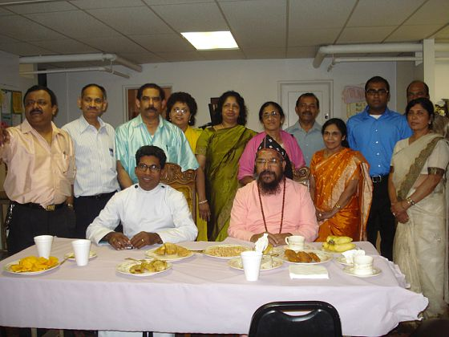

Rt. Rev. Dr. Abraham Mar Paulos Episcopa visted our church on July 12th, 2009. It was on the same day VBS concluded their 3-day program. Thirumeni spoke to all the VBS children about living a God-fearing life and serving God. This coincided with the VBS theme for this year to "GO" Obey and Serve God. Thirumeni also inaugarated our new song book that was created by Mr. Abraham Jacob and his brother in India. Overall it was a very inspiring and wonderful experience during Thirumeni's visit and we anxiously await his next visit.

Thirumeni addressing the church

VBS kids with Thirumeni

Thirumeni inaugurating song book

Thirumeni having lunch